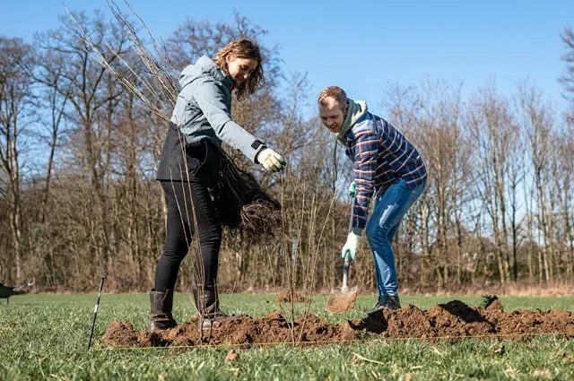

Nieuws ·
Doe mee met beplantingsproject Maak je erf goed Gelderland

Inwoners in het buitengebied van Gelderland kunnen zich nu aanmelden voor het beplantingsproject Maak je erf goed Gelderland. Het Cultuurfonds Gelderland en Stichting Landschapsbeheer Gelderland (SLG) willen een impuls geven aan het cultuurlandschap met streekeigen erven en bijbehorende beplanting. Inwoners krijgen advies en ondersteuning om op hun erf inheemse beplanting te plaatsen om de biodiversiteit te versterken.
Denk aan karakteristieke landschapselementen zoals knotwilgen, vogelbosje, elzenrijen, houtsingel, struweelhagen en/of hoogstambomen. Op donderdag 25 april organiseren zij hierover een webinar. Deelnemers kunnen zich voor de webinar en de actie aanmelden via de website van SLG: slgelderland.nl/projecten/maak-je-erf-goed-gelderland.
Plan van adviseur
Na aanmelding maakt een adviseur van SLG op basis van de wensen van de eigenaar een landschapsplan met de in het landschapstype bijpassende struiken en bomen, en brengt indien nodig een veldbezoek. Naast een uitgewerkt plan ontvangen deelnemers een aanbieding voor betaalbare aanschaf van beplanting om het erf aantrekkelijker te maken. Komende winter wordt het plantmateriaal thuis bezorgd.
Webinar 25 april
Tijdens de webinar ‘Maak je erf goed Gelderland’ op donderdag 25 april om 19.30 uur wordt uitleg gegeven over de werkwijze van het project. Ook vertelt Jelle Linders, adviseur van SLG, een boeiend verhaal over de verschillende Gelderse landschapstypen, de kenmerkende landschapselementen, over het traditionele boerenerf en hoe je de biodiversiteit kunt versterken. De webinar is interessant voor iedereen, ook als je niet deelneemt aan het project, en begint om 19.30 uur.
Beplantingsproject Maak je erf goed
Met het beplantingsproject Maak je erf goed Gelderland willen het Cultuurfonds Gelderland en SLG landschapselementen terugbrengen en zo de biodiversiteit bevorderen en de identiteit van onze omgeving versterken.
Een erf dat goed aansluit op het landschap levert een belangrijke bijdrage aan de biodiversiteit. Dit geldt voor het aanbrengen van landschapselementen zoals struweelhagen en knotwilgen. Het zorgt ervoor dat dieren zich in een gebied kunnen verplaatsen. Ook zorgt veel groen voor voedsel en beschutting. Daarnaast draagt het bij aan de identiteit van een streek
Over Stichting Landschapsbeheer Gelderland
Stichting Landschapsbeheer Gelderland zet zich sinds 1986 in voor het behouden en versterken van de kwaliteit van het cultuurlandschap in Gelderland.
Over het Cultuurfonds
Het Cultuurfonds investeert elk jaar ruim 40 miljoen euro in cultuur en natuur. Dat geld gaat naar zo’n 3.500 projecten door heel Nederland, in het Caribisch deel van het koninkrijk en in Suriname. Dat doen we met de bijdrage van de VriendenLoterij en Nederlandse Loterij, van onze schenkers en donateurs en samen met onze partners. Het Cultuurfonds Gelderland is een van de twaalf provinciale afdelingen.